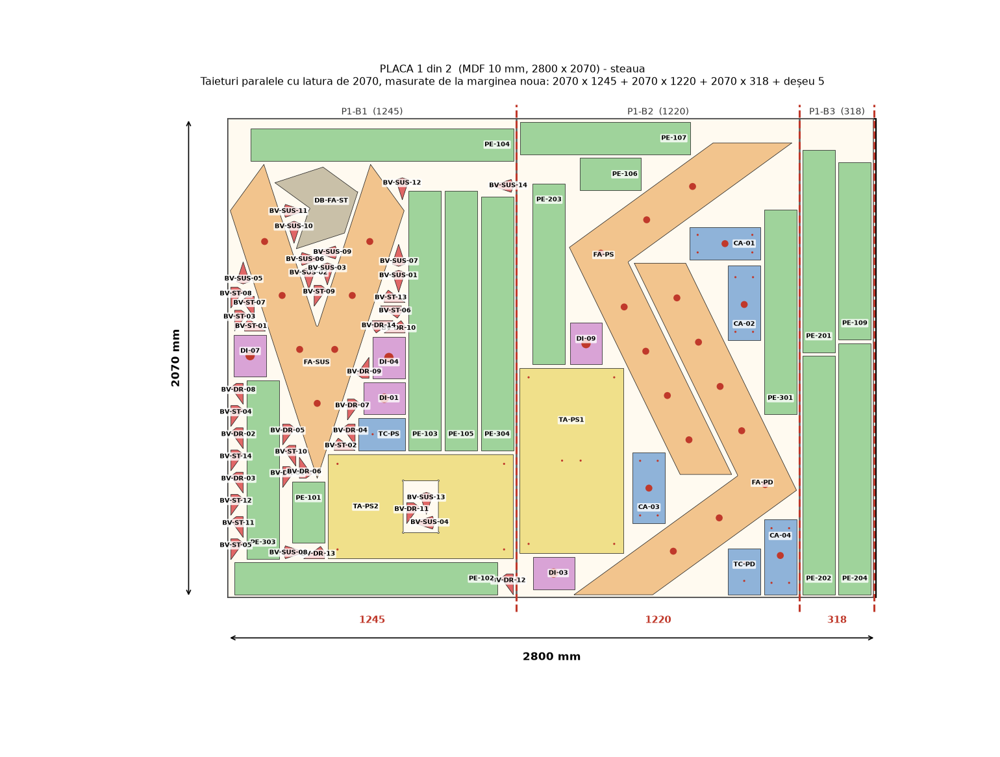

Placa 1 · 2070 × 1245 + 2070 × 1220 + 2070 × 318 + deșeu 5
Toate tăieturile sunt paralele cu latura de 2070 mm. Măsori fâșiile una după alta, de fiecare dată de la marginea nouă: 1245 mm → P1-B1, 1220 mm → P1-B2, 318 mm → P1-B3. Rămâne o fâșie de deșeu de 5 mm.

Fâșii și piese (74 piese)
| Fâșie | Dimensiuni / cod | Denumire | Dim. piesă (mm) | DXF |
|---|---|---|---|---|
| P1-B1 P1-B1.dxf | 2070 × 1245 | 56 piese · vezi așezarea | ||
| BV-DR-01 | Bloc vârf – brațul drept (sus), stratul 1/14 | 90 × 53 | DXF | |
| BV-DR-02 | Bloc vârf – brațul drept (sus), stratul 2/14 | 90 × 53 | DXF | |
| BV-DR-03 | Bloc vârf – brațul drept (sus), stratul 3/14 | 90 × 53 | DXF | |
| BV-DR-04 | Bloc vârf – brațul drept (sus), stratul 4/14 | 90 × 53 | DXF | |
| BV-DR-05 | Bloc vârf – brațul drept (sus), stratul 5/14 | 90 × 53 | DXF | |
| BV-DR-06 | Bloc vârf – brațul drept (sus), stratul 6/14 | 90 × 53 | DXF | |
| BV-DR-07 | Bloc vârf – brațul drept (sus), stratul 7/14 | 90 × 53 | DXF | |
| BV-DR-08 | Bloc vârf – brațul drept (sus), stratul 8/14 | 90 × 53 | DXF | |
| BV-DR-09 | Bloc vârf – brațul drept (sus), stratul 9/14 | 90 × 53 | DXF | |
| BV-DR-10 | Bloc vârf – brațul drept (sus), stratul 10/14 | 90 × 53 | DXF | |
| BV-DR-11 | Bloc vârf – brațul drept (sus), stratul 11/14 | 90 × 53 | DXF | |
| BV-DR-12 | Bloc vârf – brațul drept (sus), stratul 12/14 | 90 × 53 | DXF | |
| BV-DR-13 | Bloc vârf – brațul drept (sus), stratul 13/14 | 90 × 53 | DXF | |
| BV-DR-14 | Bloc vârf – brațul drept (sus), stratul 14/14 | 90 × 53 | DXF | |
| BV-ST-01 | Bloc vârf – brațul stâng (sus), stratul 1/14 | 90 × 53 | DXF | |
| BV-ST-02 | Bloc vârf – brațul stâng (sus), stratul 2/14 | 90 × 53 | DXF | |
| BV-ST-03 | Bloc vârf – brațul stâng (sus), stratul 3/14 | 90 × 53 | DXF | |
| BV-ST-04 | Bloc vârf – brațul stâng (sus), stratul 4/14 | 90 × 53 | DXF | |
| BV-ST-05 | Bloc vârf – brațul stâng (sus), stratul 5/14 | 90 × 53 | DXF | |
| BV-ST-06 | Bloc vârf – brațul stâng (sus), stratul 6/14 | 90 × 53 | DXF | |
| BV-ST-07 | Bloc vârf – brațul stâng (sus), stratul 7/14 | 90 × 53 | DXF | |
| BV-ST-08 | Bloc vârf – brațul stâng (sus), stratul 8/14 | 90 × 53 | DXF | |
| BV-ST-09 | Bloc vârf – brațul stâng (sus), stratul 9/14 | 90 × 53 | DXF | |
| BV-ST-10 | Bloc vârf – brațul stâng (sus), stratul 10/14 | 90 × 53 | DXF | |
| BV-ST-11 | Bloc vârf – brațul stâng (sus), stratul 11/14 | 90 × 53 | DXF | |
| BV-ST-12 | Bloc vârf – brațul stâng (sus), stratul 12/14 | 90 × 53 | DXF | |
| BV-ST-13 | Bloc vârf – brațul stâng (sus), stratul 13/14 | 90 × 53 | DXF | |
| BV-ST-14 | Bloc vârf – brațul stâng (sus), stratul 14/14 | 90 × 53 | DXF | |
| BV-SUS-01 | Bloc vârf – vârful de sus, stratul 1/14 | 95 × 56 | DXF | |
| BV-SUS-02 | Bloc vârf – vârful de sus, stratul 2/14 | 95 × 56 | DXF | |
| BV-SUS-03 | Bloc vârf – vârful de sus, stratul 3/14 | 95 × 56 | DXF | |
| BV-SUS-04 | Bloc vârf – vârful de sus, stratul 4/14 | 95 × 56 | DXF | |
| BV-SUS-05 | Bloc vârf – vârful de sus, stratul 5/14 | 95 × 56 | DXF | |
| BV-SUS-06 | Bloc vârf – vârful de sus, stratul 6/14 | 95 × 56 | DXF | |
| BV-SUS-07 | Bloc vârf – vârful de sus, stratul 7/14 | 95 × 56 | DXF | |
| BV-SUS-08 | Bloc vârf – vârful de sus, stratul 8/14 | 95 × 56 | DXF | |
| BV-SUS-09 | Bloc vârf – vârful de sus, stratul 9/14 | 95 × 56 | DXF | |
| BV-SUS-10 | Bloc vârf – vârful de sus, stratul 10/14 | 95 × 56 | DXF | |
| BV-SUS-11 | Bloc vârf – vârful de sus, stratul 11/14 | 95 × 56 | DXF | |
| BV-SUS-12 | Bloc vârf – vârful de sus, stratul 12/14 | 95 × 56 | DXF | |
| BV-SUS-13 | Bloc vârf – vârful de sus, stratul 13/14 | 95 × 56 | DXF | |
| BV-SUS-14 | Bloc vârf – vârful de sus, stratul 14/14 | 95 × 56 | DXF | |
| DB-FA-ST | Placă dublare rost față (brațul stâng (sus) – vârful de sus) | 371 × 355 | DXF | |
| DI-01 | Diafragmă (perete transversal) | 179 × 140 | DXF | |
| DI-04 | Diafragmă (perete transversal) | 180 × 140 | DXF | |
| DI-07 | Diafragmă (perete transversal) | 180 × 140 | DXF | |
| FA-SUS | Fața – vârful de sus | 1356 × 752 | DXF | |
| PE-101 | Perete exterior – brațul stâng (sus) | 264 × 140 | DXF | |
| PE-102 | Perete exterior – brațul stâng (sus) | 1137 × 140 | DXF | |
| PE-103 | Perete exterior – vârful de sus | 1123 × 140 | DXF | |
| PE-104 | Perete exterior – vârful de sus | 1137 × 140 | DXF | |
| PE-105 | Perete exterior – brațul drept (sus) | 1123 × 140 | DXF | |
| PE-303 | Perete interior – piciorul drept (cu bucata de braț) | 772 × 140 | DXF | |
| PE-304 | Perete interior – piciorul drept (cu bucata de braț) | 1097 × 140 | DXF | |
| TA-PS2 | Talpă – piciorul stâng (cu bucata de braț) (stratul cu locaș) | 800 × 450 | DXF | |
| TC-PS | Capac talpă – piciorul stâng (cu bucata de braț) | 200 × 140 | DXF | |
| P1-B2 P1-B2.dxf | 2070 × 1220 | 14 piese · vezi așezarea | ||
| CA-01 | Capac îmbinare: piciorul stâng (cu bucata de braț) → brațul stâng (sus) | 306 × 140 | DXF | |
| CA-02 | Capac îmbinare: brațul stâng (sus) → piciorul stâng (cu bucata de braț) | 325 × 140 | DXF | |
| CA-03 | Capac îmbinare: piciorul drept (cu bucata de braț) → brațul drept (sus) | 306 × 140 | DXF | |
| CA-04 | Capac îmbinare: brațul drept (sus) → piciorul drept (cu bucata de braț) | 325 × 140 | DXF | |
| DI-03 | Diafragmă (perete transversal) | 180 × 140 | DXF | |
| DI-09 | Diafragmă (perete transversal) | 180 × 140 | DXF | |
| FA-PD | Fața – piciorul drept (cu bucata de braț) | 1433 × 962 | DXF | |
| FA-PS | Fața – piciorul stâng (cu bucata de braț) | 1433 × 962 | DXF | |
| PE-106 | Perete exterior – brațul drept (sus) | 264 × 140 | DXF | |
| PE-107 | Perete interior – brațul stâng (sus) | 735 × 140 | DXF | |
| PE-203 | Perete interior – piciorul stâng (cu bucata de braț) | 782 × 140 | DXF | |
| PE-301 | Perete exterior – piciorul drept (cu bucata de braț) | 886 × 140 | DXF | |
| TA-PS1 | Talpă – piciorul stâng (cu bucata de braț) (stratul de jos) | 800 × 450 | DXF | |
| TC-PD | Capac talpă – piciorul drept (cu bucata de braț) | 200 × 140 | DXF | |
| P1-B3 P1-B3.dxf | 2070 × 318 | 4 piese · vezi așezarea | ||
| PE-109 | Perete interior – vârful de sus | 766 × 140 | DXF | |
| PE-201 | Perete exterior – piciorul stâng (cu bucata de braț) | 874 × 140 | DXF | |
| PE-202 | Perete exterior – piciorul stâng (cu bucata de braț) | 1032 × 140 | DXF | |
| PE-204 | Perete interior – piciorul stâng (cu bucata de braț) | 1087 × 140 | DXF | |